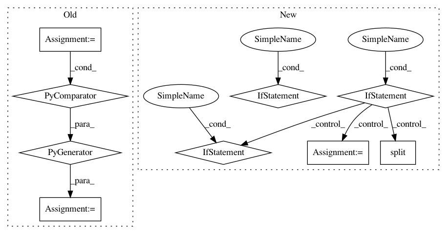

8d4d199c35f5163ed21ae705a16ce3c8548d60c6,Orange/data/io.py,BasketReader,prescan_file,#BasketReader#Any#,191
Before Change
n_elements = 0
n_rows = 0
for line in file:
items = set(mo.group(1).strip()
for mo in self.re_name.finditer(line))
names.update(items)
n_elements += len(items)
n_rows += 1
return names, n_elements, n_rows
After Change
n_elements = 0
classes = file.readline().strip()
header = classes.lower().startswith("classes:")
if header:
classes = set(x.strip() for x in classes[8:].split(","))
names = set(classes)
else:
names = set()
classes = set()
file.seek(0)
reader = csv.reader(file)
for line in reader:
names.update(mo.split("=")[0] for mo in line)
n_elements += len(line)
return names - classes, classes, n_elements, reader.line_num, header
In pattern: SUPERPATTERN
Frequency: 3
Non-data size: 9
Instances
Project Name: biolab/orange3
Commit Name: 8d4d199c35f5163ed21ae705a16ce3c8548d60c6
Time: 2012-11-28
Author: janez.demsar@fri.uni-lj.si
File Name: Orange/data/io.py
Class Name: BasketReader
Method Name: prescan_file
Project Name: OpenNMT/OpenNMT-py
Commit Name: ab89e458bdec863f2dc2f7232ffd38d49758b31a
Time: 2018-06-08
Author: srush@seas.harvard.edu
File Name: onmt/Loss.py
Class Name:
Method Name: shards
Project Name: biolab/orange3
Commit Name: 8d4d199c35f5163ed21ae705a16ce3c8548d60c6
Time: 2012-11-28
Author: janez.demsar@fri.uni-lj.si
File Name: Orange/data/io.py
Class Name: BasketReader
Method Name: prescan_file
Project Name: OpenNMT/OpenNMT-py
Commit Name: d6e8ea4250b2a48262bae0276047371ea2dcccf1
Time: 2018-06-15
Author: vince62s@yahoo.com
File Name: onmt/utils/loss.py
Class Name:
Method Name: shards